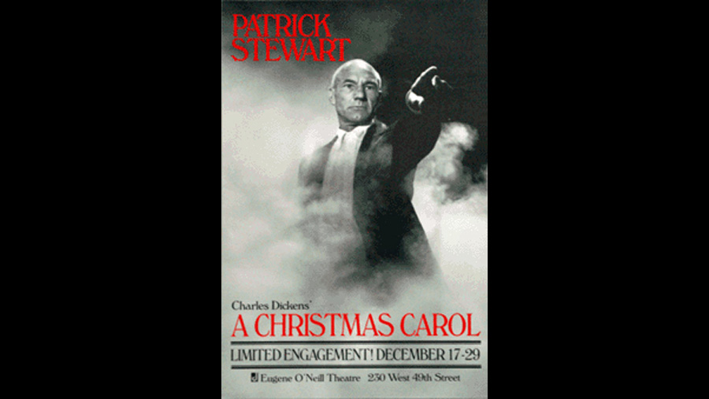

| Character | Actor |
|---|---|
| Ebenezer Scrooge and all other roles | Patrick Stewart |
Stewart began developing an adaptation of the story to be performed in a one-man show. The then-three hour performance was only performed in public at the parish church in Mirfield, West Yorkshire in support of their church organ restoration. It wasn't until during the production of the second season of Star Trek: The Next Generation two years later that Stewart began to work on re-developing it into a shorter but still full-length solo performance. He took his work to Professor Albert Hutter, a Dickens scholar at the University of California, Los Angeles, for reassurance that he hadn't made any mistakes in his adaptation. His first performance was in Hutter's home in front of around 18 people, and he found the response encouraging.
During the course of the play, Stewart acts as more than 30 characters. Out of all of them, he found the Ghost of Christmas Yet to Come the most difficult, saying that, as written, "he's a pointing hand and little else". There are no props or costume changes, although he tried using a glass of water as a prop in a single performance. Stewart compared the overall experience of performing A Christmas Carol to a roller coaster and a merry-go-round at the same time because of the pace of it. He added that "Technically, vocally and physically, it's very demanding, because I'm on my feet a lot", requiring him to train for physical fitness in order to be able to deliver the performance on a repeated basis.
Stewart took the performance to New York City in 1991 for 16 performances. The success of that run resulted in him receiving the Drama Desk Award for Outstanding One-Person Show, and a further run in the city during 1992 for 24 more performances. This also led to Stewart and A Christmas Carol being featured on the front cover of Starlog, typically a science fiction magazine, due to the actor's links to The Next Generation. In 1993, the production toured during December, and Stewart performed at several locations including the Cerritos Center for the Performing Arts and in London at the Old Vic Theatre. He returned to New York for the fourth time in 2001 with a further eight performances at the Marquis Theatre on Broadway, the takings of which all went to charity such as Actors Fund of America, the Coalition for the Homeless and Food for Survival, Inc. A further run of 23 performances at the Old Vic occurred in 2005.